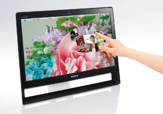
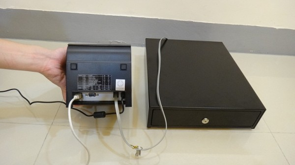

安裝範例的連結進不了
安裝範例的連結進不了, 請問熱感式印表機的型號是?
2 個回答
您好
站長目前手邊有一台全新
較簡單省事的方法
1.購買 All in one 的觸控型電腦
http://shopping.pchome.com.tw/DSAA3C
http://24h.pchome.com.tw/?mod=store&func=style_show&SR_NO=DSAA4H

*有些All in one 是沒有觸控的 選購前請注意
2. 錢箱
http://search.ruten.com.tw/search/s000.php?searchfrom=searchf&k=POS+%BF%FA%BDc&t=0
3.印單機
http://search.ruten.com.tw/search/s000.php?searchfrom=searchf&k=%A5X%B3%E6%BE%F7+%BC%F6%B7P&t=0
三者的接法
1.錢箱先接印單機

2.印單機再接電腦

效果影片
http://www.youtube.com/watch?v=QpVKbuCMomw
預算較不足可用一般電腦 筆記電腦 操作用滑鼠替代
以上簡單說明
請參考